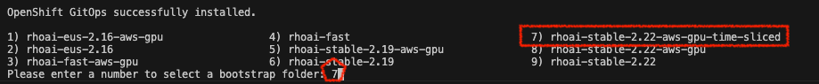
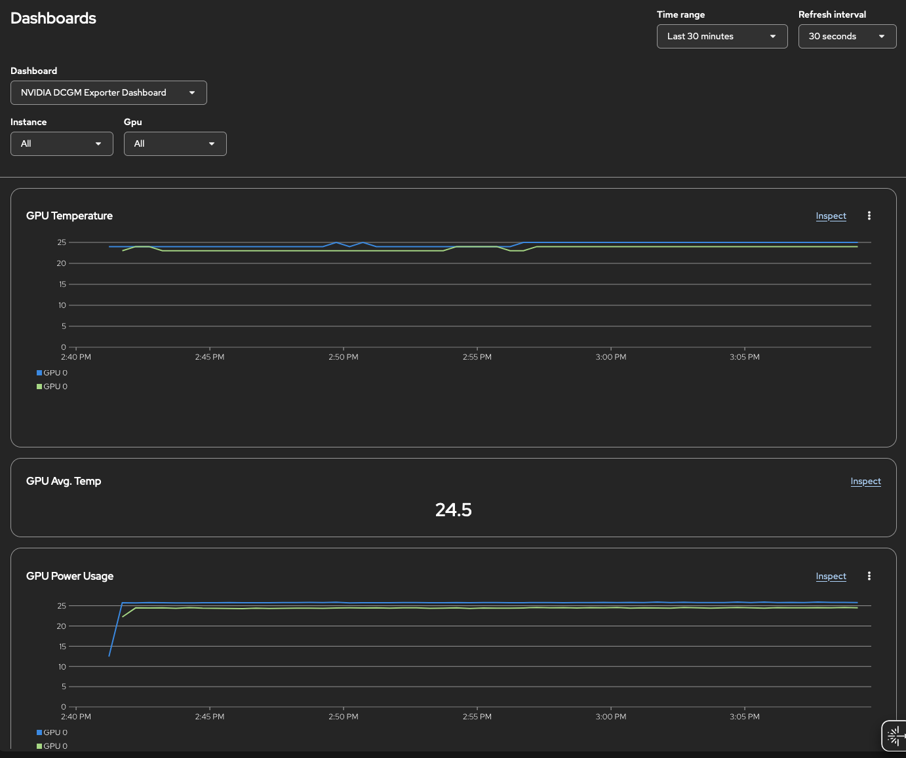

Provisioning a GPU Environment with NVIDIA A10G Tensor Core GPU
|
Please request a NEW Demo environment for this lab. Do not reuse an environment from previous labs. |
This lab provides instructions for provisioning a GPU environment on AWS using the NVIDIA A10G Tensor Core GPU. The process involves setting up the AWS environment, cloning a specific Git repository, and executing a bootstrap script to deploy the necessary components. It also includes steps for enabling and configuring GPU monitoring dashboards to visualize metrics.
-
Environment Setup: Follow external documentation to provision the AWS environment.
-
Repository Cloning: Clone the
ai-acceleratorGit repository as described below. -
Bootstrap Script: Run the
./bootstrap.shscript and select therhoai-stable-2.22-aws-gpu-time-slicedoption to set up the OpenShift cluster with GPU support. -
Monitoring: Enable GPU monitoring by creating and applying a specific
ConfigMap. This will add the NVIDIA DCGM Exporter Dashboard to the OpenShift console. -
GPU Operator Plugin: Follow additional instructions to configure a console plugin for GPU usage information.
1. Install the AWS Environment
Follow the instructions in the RHOAI Foundation Bootcamp: Provisioning a GPU Environment to set up your AWS environment.
2. Clone the RHOAI GitHub Repository
Clone the RHOAI GitHub repository to your local machine and check out the correct branch.
| The Git URL provided in the following command is specific to this bootcamp and may not be the same as the one used in other contexts. Ensure you use the exact URL and branch name as shown below. |
git clone https://github.com/shebistar/ai-accelerator.git --single-branch --branch rhoai-2.22-gpu-as-a-service-overlay ai-accelerator-gpu
cd ai-accelerator-gpu3. Execute the bootstrap script
-
Run the bootstrap script to set up the environment. This script will handle the installation of necessary components and configurations.
-
When prompted, select the option containing
rhoai-stable-2.22-aws-gpu-time-sliced../bootstrap.sh
|
Interactive Script
If the script asks you to update the branch to match your working branch, please do so, selecting option 1 in both prompts. |
You can now browse to the OpenShift console and see that the cluster is up and running.
|
Be Patient
It will take some time for the new GPU nodes to appear. The infrastructure is first provisioned in AWS. You can monitor the progress by navigating to Compute → Machines to verify that the new machines are being created. Once provisioned, they will appear under Compute → Nodes. You can check in ArgoCD that the OpenShift AI Operator is being installed. Navigate to the OpenShift GitOps console, select the |
|
Expected Issue and Resolution
If you encounter an issue where the OpenShift AI Operator is not installed, see the Expected issue and resolution section for a resolution. |
4. Enable Monitoring for GPU Nodes
To enable GPU monitoring, you need to add a specific ConfigMap to the openshift-config-managed namespace. The OpenShift console will automatically detect this ConfigMap and add the NVIDIA dashboard to the UI.
-
Create a directory for your Kustomize configuration:
mkdir -p gpu-as-a-service/nvidia-dcgm-exporter-dashboard cd gpu-as-a-service/nvidia-dcgm-exporter-dashboard -
Inside the new directory, create a file named
kustomization.yamlwith the following content. This configuration downloads the official NVIDIA Grafana dashboard definition and packages it into aConfigMap.apiVersion: kustomize.config.k8s.io/v1alpha1 kind: Component generatorOptions: labels: console.openshift.io/dashboard: "true" # optional label to enable visibility in developer perspective console.openshift.io/odc-dashboard: "true" disableNameSuffixHash: true configMapGenerator: - name: nvidia-dcgm-exporter-dashboard namespace: openshift-config-managed files: - https://github.com/NVIDIA/dcgm-exporter/raw/main/grafana/dcgm-exporter-dashboard.json -
Apply the Kustomization directory. The
oc apply -kcommand will process thekustomization.yamlfile and create theConfigMapin the correct namespace.oc apply -k .The output should confirm the creation of the
ConfigMap:configmap/nvidia-dcgm-exporter-dashboard created -
After applying the
ConfigMap, you should see a new dashboard in the OpenShift console. Navigate to Observe → Dashboards and select NVIDIA DCGM Exporter Dashboard.
5. Configure the console plugin for GPU Monitoring
Follow the instructions on the official NVIDIA documentation page: Enable the NVIDIA GPU Operator usage information.
Troubleshooting GuideExpected issue and resolutionIf you encounter an issue where the OpenShift AI Operator is not visible in the OpenShift console after the bootstrap script finishes, you can resolve this by forcing a hard refresh of the GitOps application.
|